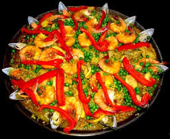

Diets in Spanish
The Mediterranean diet is known for being as tasty as it is healthy, and the fact is this is largely in part to the natural produce cultivated and harvested in the region.
However many of the ingredients now central to many of the typical Spanish dishes were not even heard of over 500 years ago,
we're talking about the popular and versatile potatoes, tomatoes, peppers and cocoa, all of them were brought from America upon its discovery.
Similarties

Some Spanish foods are similar to what we eat here in the US, however some foods vary.
A lot of people use the same foods, and batter here in the US that is used in Spanish & Spain.
Simalarites
Rice, pizza, tacos are all examples of things that both cultures eat.
Many typical Spanish products have these things in them ham, cheese, fruit and vegetables, seafood and sausages.
These are some of the most common ingredients found in Spanish cooking and can add a touch of Spain to any other dishes you may decide to make, even if they
are not spanish foods.
However, many of them go well by themselves, and they make perfect tapas.
Here is a recipe you could try at home SPANISH CHICKEN PIE
1kg potatoes, chopped
3 tsp paprika (use smoked paprika if you have it)
2 tsp olive oil
2 onions, sliced
2 garlic cloves, crushed
2 x 400g cans chopped tomatoes
300g cooked chicken, shredded
140g roasted peppers from a jar, sliced (we like Karyatis)
handful Kalamata olives, halved
Heat oven to 200C/fan 180C/gas 6. Boil the potatoes for 15-20 mins until tender. Drain, return to the pan, then mash with some seasoning and 2 tsp of the paprika.
Meanwhile, heat the oil in a large pan, then fry the onions and garlic for a few mins until softened. Stir in the remaining paprika for 1 min,
add the tomatoes , then, bring to a simmer. Tip into a large ovenproof dish, then stir in the chicken, peppers, olives and some seasoning.
Spoon over the mash, then bake for 15 mins until the mash is golden on top and the sauce is bubbling.